용접 이상 한 건을 부서별 AI 에이전트가 넘겨받아 처리합니다. 사람은 결정 카드에서 고르고, 그 결정은 규칙의 새 버전이 되어 같은 이상이 다시 생기면 결정 없이 실행됩니다.
무엇을 · 왜#
에이전트에게 공장의 쓰기를 맡기려면 세 가지가 필요합니다. 근거를 시스템에서 직접 읽어야 하고, 승인 없이는 아무것도 바꾸지 못해야 하며, 실행한 뒤 정말 바뀌었는지 다시 확인해야 합니다. 이 장은 그 세 가지가 한 사건에서 어떻게 돌아가는지 보여 줍니다.
| 활동 | 맡는 에이전트 | 하는 일 |
|---|---|---|
| 비전 검사·위험 판정 | 비전 검사 에이전트 | 전류, 보호가스, 비드 판정으로 위험 등급을 냅니다 |
| 설비 진단·예지보전 | 설비 예지보전 에이전트 | 공구 교체 이력과 편차 시작 시각으로 원인을 좁힙니다 |
| 의심 LOT 추적 | LOT 품질 에이전트 | 원천 5종을 넘나들며 의심 대상과 외주분을 찾습니다 |
| 출하 가능 수량 재계산 | 수주·납기 에이전트 | 의심분을 뺀 출하 가능 수량과 부족분을 계산합니다 |
| 대안 시뮬레이션 | 생산계획 에이전트 | 대안 3개의 출하량, 비용, 탄소 증분을 계산합니다. 원천은 바뀌지 않습니다 |
| 대안 에너지·탄소 평가 | 에너지·공정운영 에이전트 | 대안별 에너지와 탄소 증분을 냅니다 |
| 결정 카드·경로 결정 | 품질 대응 조정 에이전트 | 자동 실행 조건을 따져 결정 요청 또는 자동 실행을 정합니다 |
| 대응 결정 | 품질팀장(사람) | 대안과 적용 범위를 고릅니다 |
| 격리·재계획 실행 | 업무 실행 에이전트 | 승인된 결정으로만 실행하고 원천을 다시 읽어 확인합니다 |
| 공정복구 계획 | 공정복구 에이전트 | 복구 작업 순서와 재가동 작업지시를 냅니다 |
| 표준·양산승인 영향 | APQP 표준화 에이전트 | 관련 표준 문서의 개정 후보를 냅니다 |
먼저 알아 둘 것
- 에이전트는 실제로 실행됩니다. 활동 하나에 1분 안팎 걸리고, 재발 사건까지 합쳐 16분쯤 걸렸습니다. 영상에서는 기다리는 시간을 줄였습니다.
- 데이터와 시나리오는 합성이고, 비전 추론은 학습된 모델이 아니라 픽셀 규칙으로 흉내 낸 것입니다.
- 이상 신호는 시연을 위해 주입합니다. 실제 설비에서 수집한 값이 아닙니다.
따라 하기#
- 사건 열기. 콘솔의 비전 · Edge 탭에서 지금 상태를 봅니다. 시연 담당자가 이상을 주입하면 Edge 조건 평가기가 전류와 보호가스 이탈을 조건 에피소드로 묶어 사건을 엽니다. 표에 사건 번호(WCE-…)가 생깁니다.
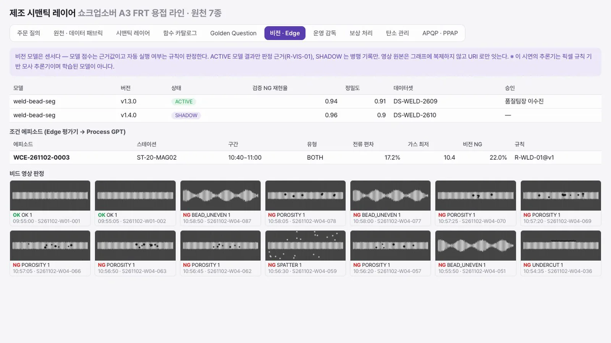
조건 에피소드가 열린 콘솔 - 프로세스 보기. Process GPT 에서 용접 품질 이상 대응 정의를 엽니다. 레인은 부서별 팀이고, 활동마다 그 팀의 전문 에이전트가 맡습니다. 사건이 열리면 이 프로세스가 자동으로 시작됩니다.
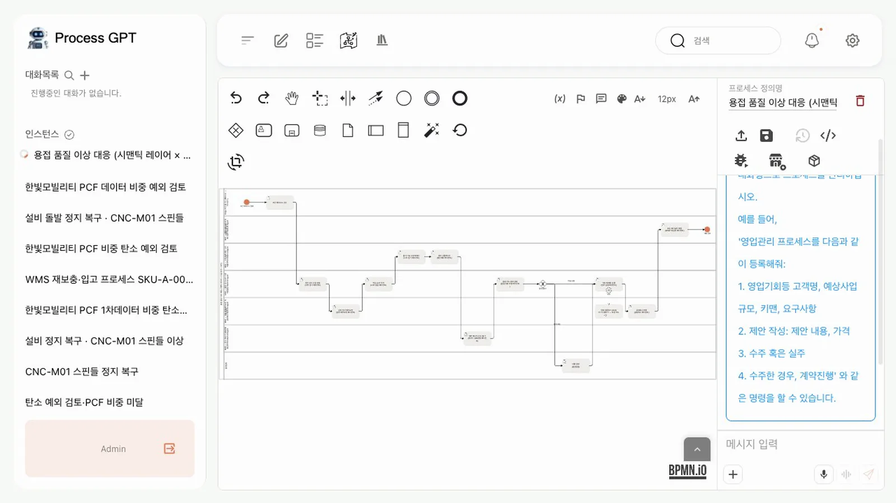
부서별 레인으로 나눈 프로세스 - 위험 판정. 첫 활동의 작업 화면을 엽니다. 전류 편차 최대 17.2%가 186초 이어졌고, 보호가스는 10.4 L/min 까지 떨어졌으며, 비전 NG+REVIEW 는 22%입니다. 규칙
R-WLD-01의 세 조건을 모두 충족해 위험 등급은 HIGH 입니다.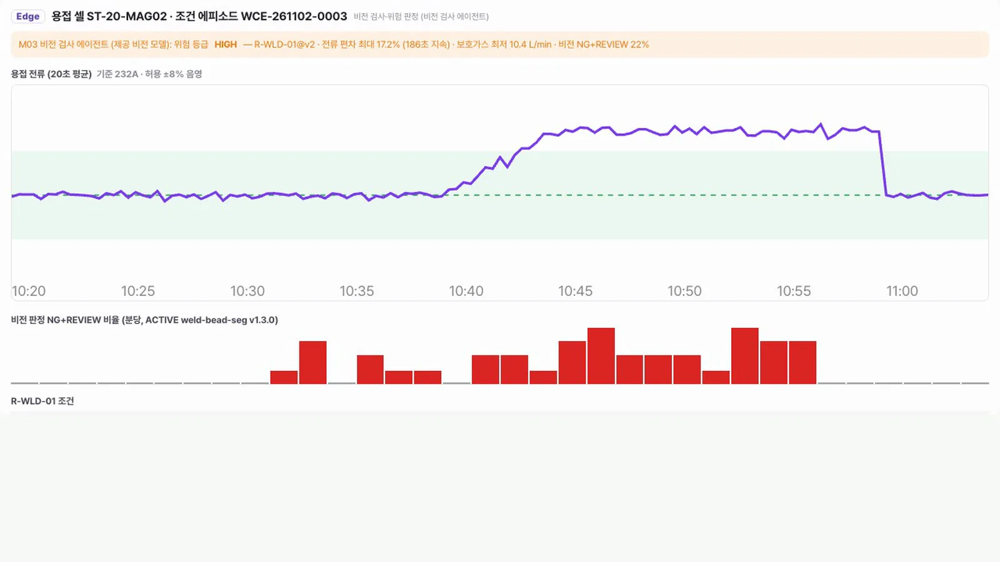
위험 판정 - 의심 LOT 추적. 의심은 360EA, LOT 4개입니다. Edge, MMS, QMS, MES, SCM 을 차례로 읽습니다. 노즐을 교체한 10:35 이전은 제외합니다. 외주로 나간 W03 은 대응표가 없어 추정으로 표시하고 보류 판단에만 씁니다.
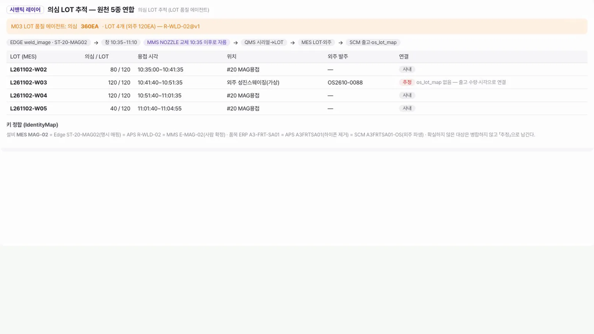
의심 LOT 추적 - 납기 영향. ERP 회계 재고는 2,300, 이상 전 출하 가능은 2,000, 의심분을 빼면 1,640 입니다. 주문 2,000EA 에 360EA 가 부족합니다. 아래 표에 LOT 별 근거가 있습니다.
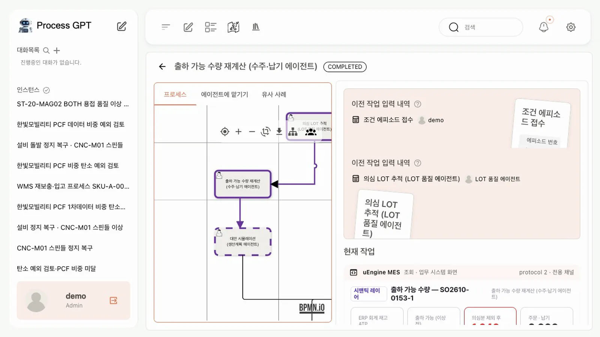
출하 가능 수량 재계산 - 대안 비교. 대안 3개가 나옵니다. A 는 사내 의심분 재검과 노즐 교체(17시 출하 1,880, 480,000원), B 는 MAG-01 전환(1,640, 180,000원), C 는 분할 납품(1,640, 74,700원)입니다. 이 단계에서 어느 원천도 바뀌지 않습니다.
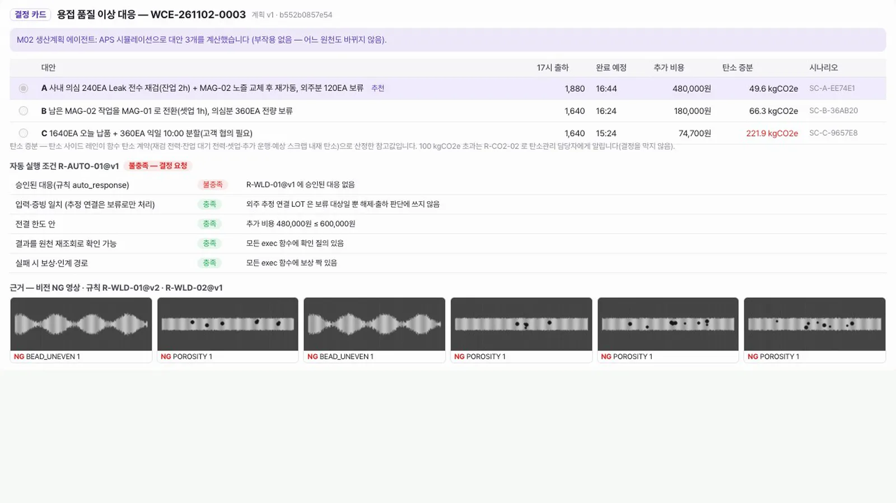
대안 시뮬레이션 - 경로 결정. 품질 대응 조정 에이전트가 자동 실행 조건
R-AUTO-01@v1을 따집니다. 승인된 대응이 아직 없어 불충족이고, 품질팀장에게 결정을 요청합니다. 승인 전에는 어느 원천도 바뀌지 않습니다.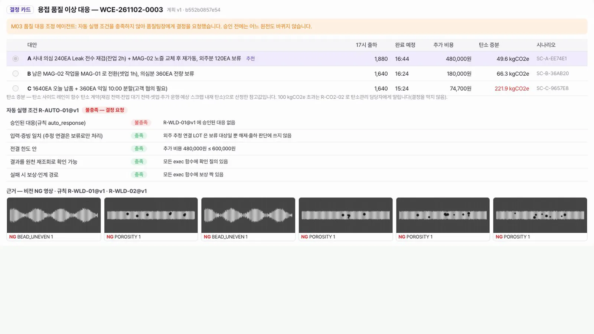
자동 실행 조건과 결정 요청 - 사람이 결정하기. 품질팀장의 할 일에 대응 결정 건이 들어옵니다. 열어서 대안 A 를 고르고, 범위를 앞으로 적용할 규칙으로 정한 뒤 의견을 적고 A 승인을 누릅니다.
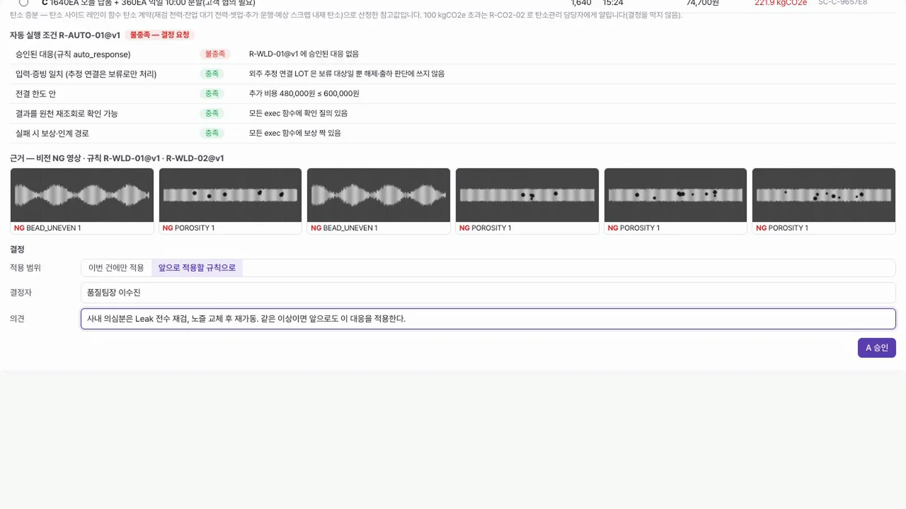
결정 카드 - 실행 원장 확인. 업무 실행 에이전트가 승인된 결정으로만 실행합니다.
Lot.hold,Inspection.raiseLevel,Outsource.hold,Aps.reschedule,WorkOrder.reschedule다섯 건이 VERIFIED 입니다. 재조회 칸이 쓰기 뒤 원천을 다시 읽은 결과입니다. 아래에 학습 결과R-WLD-01@v2가 있습니다.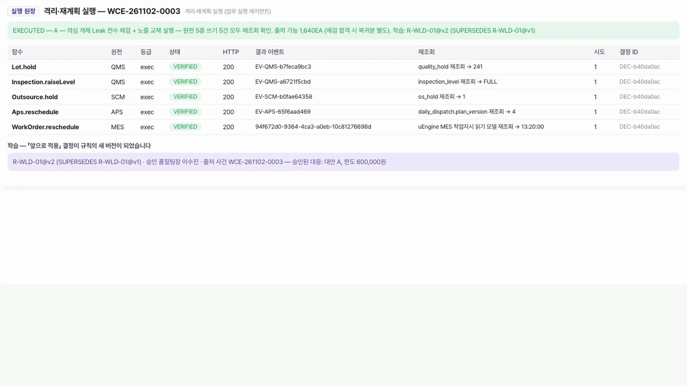
실행 원장과 학습 - 복구 계획. 공정복구 에이전트는 노즐 교체 7분 뒤 편차가 시작된 점을 근거로 장착 불량을 먼저 의심합니다. 예상 정지는 20분이고, 재가동 작업지시까지 MES 에 반영합니다.
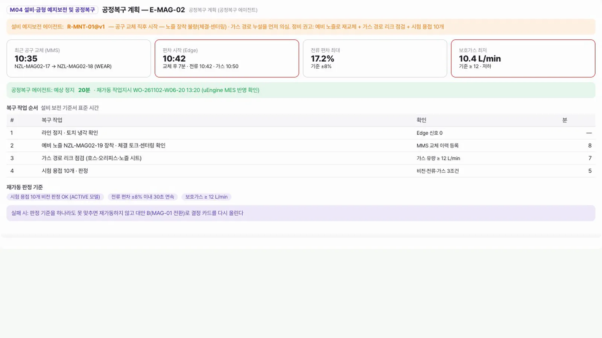
공정복구 계획 - 재발 사건. 같은 이상을 다시 주입합니다. 이번에는 자동 실행 조건이 모두 충족되어 결정 요청 없이 실행합니다. 승인된 대응이 있고, 추가 비용 240,000원은 한도 600,000원 안입니다.
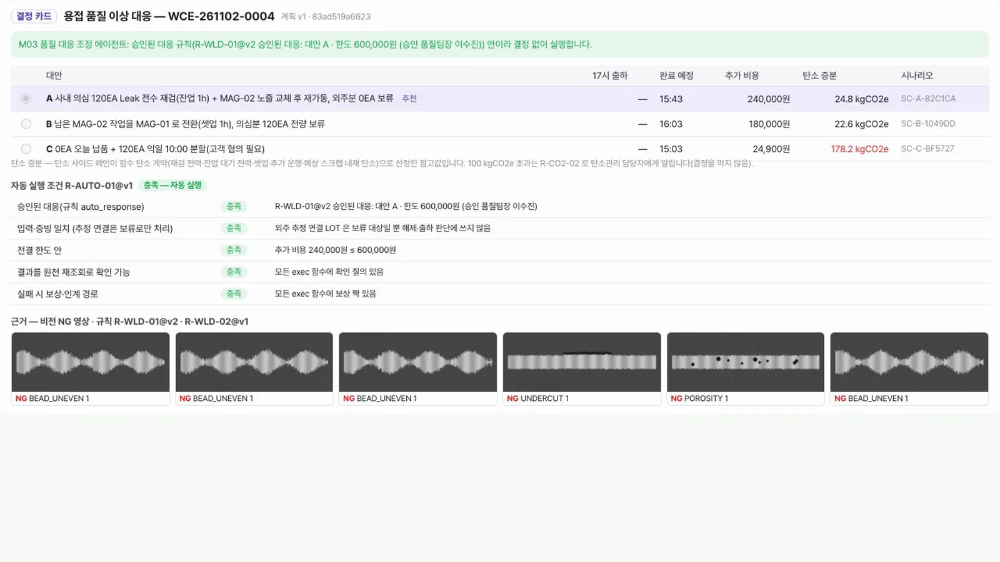
재발 사건의 자동 실행 판단 - 자동 실행 기록. 쓰기 네 건이 VERIFIED 입니다. 결정 ID 가
AUTO-로 시작해, 사람이 아니라 규칙으로 실행했다는 것이 원장에 남습니다.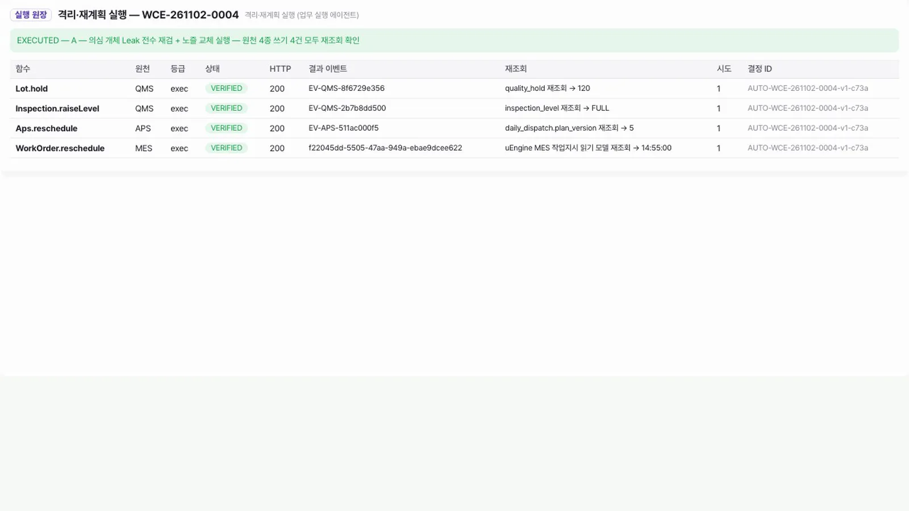
자동 실행 원장 - 운영 감독. 콘솔의 운영 감독 탭을 엽니다. 처리 사건 2건, 사건당 사람 개입 0.5회, 잘못된 자동 처리 0건, 학습 후 자동 처리 1건입니다. 합성 시나리오 두 건의 값이므로 성능 수치로 읽지 마세요. 일시 중지를 누르면 자율 실행을 멈출 수 있습니다.
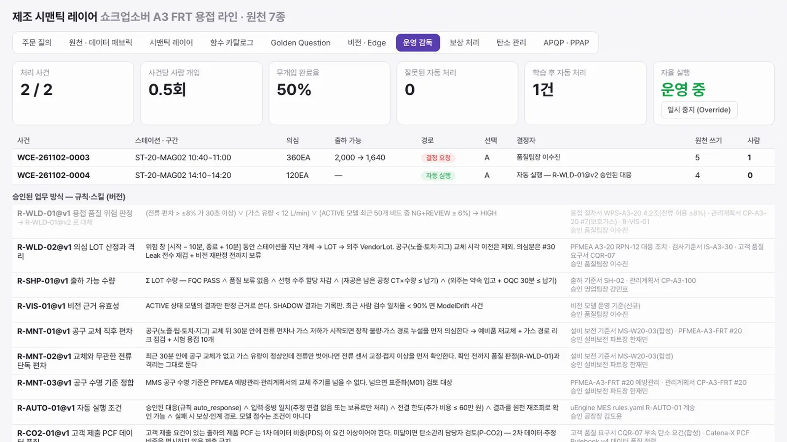
운영 감독
확인 문제#
- 대안 시뮬레이션 단계에서 원천 시스템은 어떻게 되나요?
- 첫 사건은 왜 사람에게 결정을 요청했고, 재발 사건은 왜 그러지 않았나요?
- 실행 원장의 「재조회」 칸은 무엇을 보여 주나요?
- 재발 사건을 사람이 결정하지 않았다는 것은 어디에서 알 수 있나요?
정답
- 바뀌지 않습니다. 쓰기는 승인된 결정이 있어야 실행 단계에서 일어납니다.
- 첫 사건은 자동 실행 조건 중 「승인된 대응」이 없어 불충족이었습니다. 품질팀장이 「앞으로 적용」으로 결정해 규칙이
R-WLD-01@v2가 되었고, 재발 사건은 비용이 한도 안이어서 조건을 모두 충족했습니다. - 쓰기를 한 뒤 원천을 다시 읽어 확인한 값입니다. 쓰기 요청이 성공했다는 응답만 믿지 않습니다.
- 결정 ID 가
AUTO-로 시작하고, 운영 감독의 그 사건 행에 결정자가 규칙으로, 사람 개입이 0 으로 나옵니다.